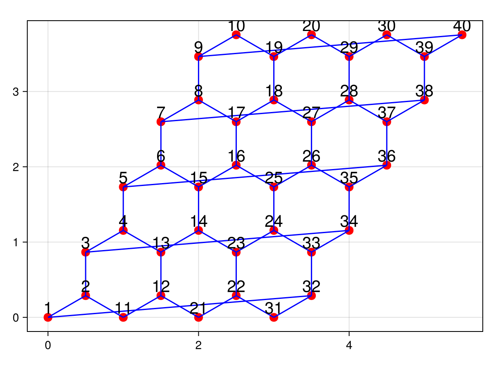

SimpleLattices


This is a package for constructing lattices in Julia.
Installation
using Pkg
Pkg.add(url="https://github.com/nicolasloizeau/SimpleLattices.jl")Usage
Standard lattices constructors are provided : SquareLattice, CubicLattice, TriangularLattice, HexagonalLattice and KagomeLattice. Custom lattices can be constructed using UnitCell.
Example: Construct a hexagonal lattice with 3*4 cells and periodic boundary conditions along the x-axis, and plot it:
using CairoMakie # for plotting
using SimpleLattices
lattice = HexagonalLattice(4,5; periodic=(true, false))
plot_lattice(lattice)
positions(lattice)40-element Vector{Tuple{Float64, Float64}}:
(0.0, 0.0)
(0.5, 0.28867513459481287)
(0.5, 0.8660254037844386)
(1.0, 1.1547005383792515)
(1.0, 1.7320508075688772)
(1.5, 2.02072594216369)
(1.5, 2.598076211353316)
(2.0, 2.886751345948129)
(2.0, 3.4641016151377544)
(2.5, 3.7527767497325675)
⋮
(3.5, 0.28867513459481287)
(3.5, 0.8660254037844386)
(4.0, 1.1547005383792515)
(4.0, 1.7320508075688772)
(4.5, 2.02072594216369)
(4.5, 2.598076211353316)
(5.0, 2.886751345948129)
(5.0, 3.4641016151377544)
(5.5, 3.7527767497325675)edges(lattice)56-element Vector{Vector{Int64}}:
[1, 2]
[1, 32]
[11, 12]
[2, 11]
[21, 22]
[12, 21]
[31, 32]
[22, 31]
[3, 4]
[3, 34]
⋮
[19, 20]
[10, 19]
[18, 19]
[29, 30]
[20, 29]
[28, 29]
[39, 40]
[30, 39]
[38, 39]SimpleLattices.UnitCellSimpleLattices.CubicLatticeSimpleLattices.HexagonalLatticeSimpleLattices.KagomeLatticeSimpleLattices.SquareLatticeSimpleLattices.TriangularLatticeSimpleLattices.edgesSimpleLattices.plot_latticeSimpleLattices.plot_positionsSimpleLattices.positionsSimpleLattices.sites
SimpleLattices.UnitCell — Type
UnitCell{D}A unit cell in D dimensions, defined by its lattice vectors, the positions of the sites within the unit cell, and the edges connecting the sites.
SimpleLattices.CubicLattice — Method
CubicLattice(Nx, Ny, Nz)Create a cubic lattice of size (Nx, Ny, Nz). Periodic boundary conditions are not implemented for 3D lattices at the moment.
SimpleLattices.HexagonalLattice — Method
HexagonalLattice(Nx, Ny; periodic=(false, false))Create a hexagonal lattice of size (Nx, Ny). The periodic keyword argument specifies whether the lattice is periodic in the x and y directions, respectively.
SimpleLattices.KagomeLattice — Method
KagomeLattice(Nx, Ny; periodic=(false, false))Create a kagome lattice of size (Nx, Ny). The periodic keyword argument specifies whether the lattice is periodic in the x and y directions, respectively.
SimpleLattices.SquareLattice — Method
SquareLattice(Nx, Ny; periodic=(false, false))Create a square lattice with Nx sites in the x direction and Ny sites in the y direction. The periodic keyword argument specifies whether the lattice is periodic in the x and y directions, respectively.
SimpleLattices.TriangularLattice — Method
TriangularLattice(Nx, Ny; periodic=(false, false))Create a triangular lattice of size (Nx, Ny). The periodic keyword argument specifies whether the lattice is periodic in the x and y directions, respectively.
SimpleLattices.edges — Method
edges(lattice::Lattice; edge_indexes=1:length(lattice.cell.edges))Returns a list of edges in the lattice, where each edge is represented as a couple of site indexes.
SimpleLattices.plot_lattice — Method
plot_lattice(lattice::Lattice)Plot the given lattice. Using GLMakie or CairoMakie if available. Returns a figure.
SimpleLattices.plot_positions — Method
plot_positions(lattice::Lattice)Plot the positions of the sites in the given lattice. Using GLMakie or CairoMakie if available. Returns a figure.
SimpleLattices.positions — Method
positions(lattice::Lattice)Returns a vector of the positions of all sites in the lattice. The positions are ordered like sites.
SimpleLattices.sites — Method
sites(lattice::Lattice)Return a list of sites indexes.